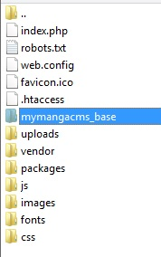
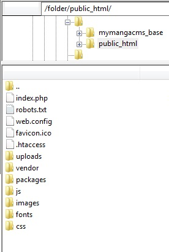
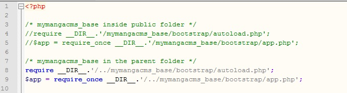
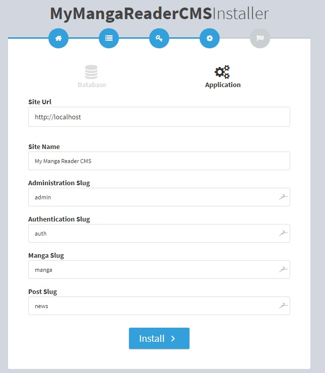
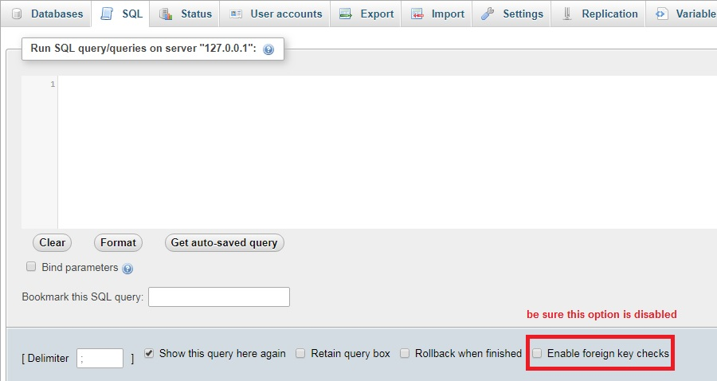

the version 2.0 of the script is based on Laravel framework version 5.4, you will need to make sure your server meets the following requirements:
A verfication of thos extension will be done automatically by the script during the installation process.
You can follow one of thos two choices:
- Copy the content of the folder upload/public to your domaine folder (e.g. public_www, www, public, ...)
- Copy the folder upload/mymangacms_base to your domaine folder (e.g. public_www, www, public, ...)
You should have this structure :

- Copy the content of the folder upload/public to your domaine folder (e.g. public_www, www, public, ...)
- Copy the folder upload/mymangacms_base to the parent folder of your domaine
You should have this structure :

after that you need to edit the index.php file, and comment or delete lines 4 & 5 and uncomment lines 8 & 9, like this :

You can now start the installation by navigating to your domaine :

After clicking on "Start" the installation will begin, and this will take upto 1m30, just be patient.
Adapt the old database to the new structure:
execute the SQL scripts in update folder, one by one in phpmyadmin in this order :
01_create_new_tables.sql
02_migrate_structure.sql
03_constraints.sql (this may take a time to be executed, depending of size of data you have, you can execute each commented area separetly: ids, index & constraints)
04_new_data.sql
be sure that the option "Enable foreign key checks" is disabled if you have it in your phpmyadmin, if you dont have this option don't worry, a similar instruction is added in scripts and you can start executing scripts.

Edit the file upload/mymangacms_base/.env
Connect to your dashboard from this URL youdomain.com/auth/login
Goto configuration > subscription & click "Update" button (this will update the .env file)
If you have other roles goto "Roles" and re-adapt them to the new structure.
If you use captcha, goto configuration > general > captcha tab and follow instructions.
APP_URL=http://mydomain.com
or like this, to support both http & https
APP_URL=//mydomain.com
Thank you for purchasing this application.
If you have any questions, suggestions, feedbacks, please feel free to email via my user page.
Your vote will be greatly appreciated!
Thanks so much! :)